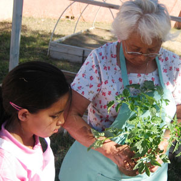
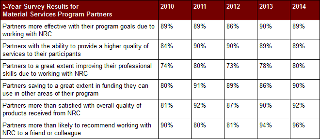
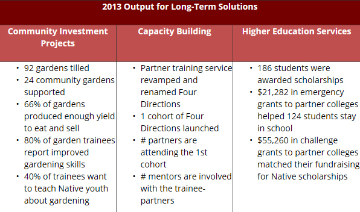

Hello, my name is Dearlynn, and I am of the Navajo tribe. I am of the Edge Water clan, born for the Folded Arms clan. My maternal grandfather is Tangled People clan…See Video
]] replaceall]]In Native American cultures, Elders are the wisdom keepers. They carry and pass on the language, stories, values, and cultural teachings. Read More
]] replaceall]]Our Program Logic Model is set up to illustrate the change for our reservation partners. The logic model shows that, as reservation partners become more effective, they are more likely to create positive impact for their communities.
This moves us toward our vision of strong, self-sufficient Native American communities, and it underscores the need for NRC to maintain long-term relationships, high customer satisfaction and continuous feedback from our partners. Download the Effectiveness Report (PDF)
]] replaceall]]
PWNA has a strong network of more than 1,000 partnerships with reservation programs (our Program Partners). We work through these partners to bring much-needed relief to 250,000 Native Americans each year. Learn More About the PWNA Way
Collaborating with our Material Services partners, PWNA provides essential supplies and seasonal services for Northern Plains and Southwest reservations, education and animal welfare. Yet, even while meeting immediate needs, we are having a long-term impact.
Each year, PWNA sends an anonymous survey to our entire base of 1,000+ Program Partners: we want to learn about the gains they have made by working with us. Our annual survey response rate is higher than 50% and the results show that PWNA has a positive impact on our partners and their ability to better serve their communities, as our graphic shows.
 ]] replaceall]] [[E130:[[T8:[[S51:reus_pwna_components]]]] dup dup "" indexof swap "" indexof substring "View All" "Learn About Our Long-term Solutions Impact" replaceall "@title-link" "PageServer?pagename=pwna_our_impact#long-term" replaceall "@title" "Long-Term Impact & Results" replaceall "@content" [[T8:PWNA’s long-term services are designed to support the self-determined initiatives of reservation partners and other local leaders who are working for sustainable gains in their communities. While our Long-Term Solutions are relatively new offerings, they are already yielding positive outcomes for partners, participants and communities on the reservations.
This chart shows our recent sustainability projects and volume of service for Long-Term Solutions.
 ]] replaceall]] [[E130:[[T8:[[S51:reus_pwna_components]]]] dup dup "" indexof swap "" indexof substring "View All" "View All Reports" replaceall "@title-link" "PageServer?pagename=pwna_reports" replaceall "@title" "PWNA Reports (PDF)" replaceall "@content" [[T8:PWNA provides a number of publications on impacting quality of life for the Native American people, transparency, and giving. We also offer many facts and resources for learning more about conditions on the Native American reservations that we serve throughout Indian country.